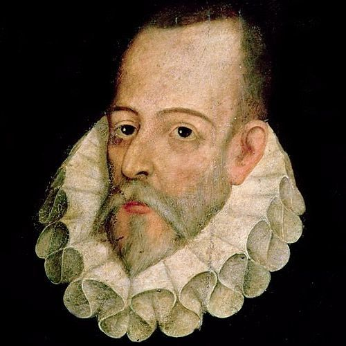

 Miguel de Cervantes Novelista, poeta y dramaturgo español (*1547 - 1616) Nació el 29 de septiembre de 1547 en Alcalá de Henares y murió el 22 de abril de 1616 en Madrid (fue enterrado el 23 de abril y popularmente se conoce esta fecha como la de su muerte).
El ingenioso hidalgo Don Quijote La novela consta de dos partes: la primera. El ingenioso hidalgo don Quijote de la Mancha, fue publicada en 1605; la segunda, El ingenioso caballero don Quijote de la Mancha, en 1615 (título original: Segunda parte del ingenioso caballero Don Quijote de la Mancha). La inspiración de Cervantes para componer esta obra vino, al parecer, del llamado Estremés de los romances, que era de fecha anterior (aunque esto es discutido). Su argumento ridiculiza a un labrador que enloqueze creyéndose héroe de romances. El labrador abandonó a su mujer, y se echó a los caminos, como hizo Don Quijote. Este estremés posee una doble lectura : tambien es una crítica a Lope de Vega ; quien, después de haber compuesto numerosos romances autobiográficos en los que contaba sus amores,abandonó a su mujer y marchó a la Armada invencible. Es conocido el interés de Cervantes por el Romancero y su resentimiento por haber sido echado de teatros por el mayor éxito de Lope de Vega, asi como su carácter de grean entremesista. Un argumento a favor de esta hipótesis sería el echo de que, a pesar de que narrador nos dice que Don Quijote ha enloquecido a causa de la lectura de novelas de caballerías, durante su primera salida recita romances constantemente, sobre todo en los momentos de mayor desvarío. Por todo ello, podría ser una hipótesis verosímil.